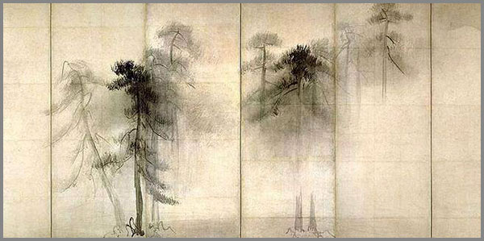

17. Անհասանելի Լռության Տիեզերքը, կամ Փնտրտուք Առանց Ձեռքբերման
 |
Լռությունը մենք հաճախ պատկերացնում ենք որպես ձայնի բացակայություն, մեկուսացում կամ անցում։ Բայց իրական լռությունը գերազանցում է այս սահմանափակումները։ Այն չի ենթադրում ընդամենը դադար խոսքից կամ շարժումից, այլ բացվում է որպես հսկայական, ներքին տիեզերք՝ անհասանելի և նույնքան հարուստ, որքան այն միտքը, որն ուզում է սահմանել նրան։
Այս գրության մեջ փորձելու ենք հպվել այդ անհասանելի լռության տիեզերքին, որն անընդհատ շոշափվում է, բայց երբեք լիովին չի հասնում մեզ։ Այն տիեզերք է, որտեղ գոյության և չգոյության սահմանները աղավաղվում են, որտեղ ժամանակը կորցնում է նշանակություն, իսկ ներկայությունը դառնում է խտություն, լույս, և միաժամանակ՝ լռության աներևույթ ձայն։
Այս տիեզերքում բացակայում են խառնաշփոթ ստեղծող մեղքերը ձայնի, չկան սպասումներ կամ պահանջներ։ Այստեղ լռությունն ինքնին արթնացման մի ձև է, որն առաջ է բերում առկայության նոր ընկալում, երբ չանելն ու լինելը դառնում են նույնը՝ բացելով անսահման հնարավորությունների հորիզոն։
Անհասանելի լռության տիեզերքը բացահայտելու ուղին՝ հավասարակշռությունն է առանց ճնշման, հարգանքն է ինքնության հանդեպ, և զրույցը ներկայի և ընդհանորի հետ։ Հետևաբար, հրավիրված եք լռության մեջ չլսված ձայների, չտեսած պատկերների, և այն ամենի մեջ, ինչը բառերով չի սահմանվում, այլ զգացվում է՝ հենց այնտեղ, որտեղ ոչինչ չի խանգարում լինելուն։
Սրան հասնում են ոչ միայն բառերով ճանապարհ հարթելով լռության մեջ, այլ նաև բացելով մի մուտք, որտեղ չկա փնտրտուք կամ ձեռքբերում, այլ կա միայն հենց լինելը՝ ամբողջությամբ, առանց կռվի, առանց փախուստի։ Այնտեղ՝ անհասանելի լռության տիեզերքում, պիտի գտնել այն, ինչը ամենամտքադավն է՝ ազատություն առանց սահմանների, խաղաղությու՝ առանց պայմանների, և ամբողջականություն առանց լրացման անհրաժեշտության։ Իսկ այդ ուղին սկսվում է միայն մի բանով՝ համարձակությամբ մնալ այնտեղ, որտեղ նույնիսկ լռությունը ձայն չունի։
Լռության խտությունը ներքին տիեզերքում
Կան պահեր, երբ արտաքին ձայները դադարում են նշանակություն ունենալ։ Անգամ մեր իսկ մտածած մտքերը սկսում են կորցնել իրենց կշիռը։ Այդ պահերին լռությունը այլևս բացակա բան չէ, այլ ներկա է ամբողջությամբ։ Եվ որքան երկար մենք մնում ենք այդ լռության ներսում, այնքան այն խտանում է։
Սկզբում թվում է, թե լռությունը դատարկ է։ Բայց դա խաբկանք է միայն։ Իրականում լռությունը լցված է։ Այն ունի խտություն, որը զգացվում է շնչով, ոչ թե ականջով։ Նման խտության մեջ սկսում ես զգալ ներսիդ տարածքն անշոշափելի, բայց հստակ։ Մարմնի և մտքի սահմանները փափկում են, և մի նոր զգացողություն է ծնվում՝ գոյություն առանց պատմության, առանց մեկնաբանության։
Այս լռությունը երբեմն կասկածի նման է գալիս, մտածել տալով՝ թե արդյոք ճի՞շտ է մնալը լռության մեջ: Բայց երբ չես վանում նրան, նա փոխում է ներկայության որակը։ Լռությունը դառնում է միջավայր ինչպես մութը, որում աստղերը հայտնվում են։ Եվ որքան էլ բան չես անում այդ պահին, իրականում մի ամբողջ տիեզերք է լցվում ներսդ:
Այդ տիեզերքն անանուն է, առանց ուղղության կամ չափի։ Այն չի ենթարկվում բացահայտման սովորական օրենքներին։ Չկա մի բան, որը պիտի գտնես այնտեղ, ինչպես չկա նպատակ, որը պիտի կատարես։ Բայց հենց այդ բացակայության մեջ է ծնվում ամենաազատ զգացողությունը՝ մի բան, որ նման է վերադարձի, թեև չես հիշում՝ երբ ես հեռացել։
Լռության խտությունն այնքան նուրբ է, որ ցանկացած փորձ նրան որսալու՝ կոտրում է այդ հմայքը։ Դրա համար պետք չէ լռությունը հասկանալ։ Պետք չէ բացատրել նրան։ Պետք է միայն մերձենալ, ինչպես մոտենում ես հորիզոնին՝ իմանալով, որ նա երբեք չի մոտենա քեզ։ Բայց միևնույն է գնում ես ընդառաջ։
Եվ հենց այդ առանց շարժման քայլքի մեջ է, որ լռությունը դառնում է ճշմարիտ ներկայություն։ Դառնում է ներքին տարածքի միակ բնակիչը՝ մեղմ, բայց հաստատուն։ Այն չի պնդում, չի հրամայում, չի ուսուցանում։ Այն պարզապես ներկայանում է՝ և այդ ներկայությունն արդեն բավարար է ամեն ինչ փոխելու համար։
Լռության խտությունը ներսում ոչ թե դատարկություն է, այլ խորապես ապրելի ներկայություն, որ բացվում է միայն այն ժամանակ, երբ դադարում ես փնտրել։
Չանելն ու լռությունը որպես ներդաշնակության արվեստ
Մենք սովոր ենք կապել ներդաշնակությունը կարգի, հավասարակշռության կամ համաչափության հետ։ Սակայն իրական ներդաշնակությունը հաճախ ծնվում է այն պահից, երբ դադարում ենք ուղղել, ձևավորել կամ վերահսկել։ Երբ չենք խանգարում իրականությանը լինել այն, ինչ կա։ Այդ պահը «չանելն» է։ Եվ լռությունն է դրա լեզուն։
Չանելը հասունանում է լռության մեջ, երբ ձայները դուրս են գալիս լսադաշտից, և ներսդ նույնպես դադարում է աղմկել ու սկսում ես նկատել, թե որքան բան է ինքնուրույն կարգավորվում է առանց քեզ։ Գուցե հենց այնտեղ է ներդաշնակության ակունքը՝ որտեղ ոչ թե վերահսկելն է այն ստեղծում, այլ չվախենալը։
Երբ լռությունը դառնում է չանելու ուղեկիցը, ներկան սկսում է բացվել իր բոլոր շերտերով։ Ոչինչ չի պակասում, ոչինչ էլ չի ավելանում։ Աշխարհն ամբողջանում է ոչ թե կատարելության միջոցով, այլ պարզ գոյությամբ՝ առանց նպատակի, առանց ձգտման։ Եվ դու՝ այդ ամենի ներսում, այլևս ոչ թե արարող ուժ ես, այլ ներկայություն՝ ներդաշնակ հենց ինքդ քո մեջ։
Չանելն իրականում դադար չէ, այլ դուռ՝ դեպի մի տարածություն, որտեղ գոյությունը հնչում է առանց ձայնի, իսկ ներդաշնակությունը ծնվում է ոչնչի չդիմադրելու ընդունակությունից։
Ներսի տիեզերական զգացողության անհասանելիությունը
Կան զգացողություններ, որոնք բառից դուրս են։ Դրանք նույնիսկ միտք չեն, այլ ընդամենը ներկայության ստվեր, շունչ կամ թրթիռ՝ խորքում։ Նման զգացողությունը երբեմն համընկնում է լռության պահերին, երբ ներսդ կարծես բացվում է մի բանի առաջ, որն այնքան անծանոթ է, որ նույնիսկ չես փորձում այն հասկանալ։
Այդ ներքին տիեզերքը չունի կենտրոն։ Այն չի ունենում նաև եզրեր։ Բայց նրա ներկայությունը զգացվում է այնքան ուժգին, որ դու դադարում ես քեզ զգալ որպես անձ: Դու զգում ես անհասանելիությունը ինչպես հիշողություն՝ որը երբեք իրականում չի եղել, բայց կա։ Կա ինչպես մի բան, որը փնտրել ես միշտ, բայց չգիտես թե ինչ տեսք ունի այն։ Այս զգացողությունը չի հստակեցվում, որովհետև հենց այդ մթությունն է իր հմայքը։ Եվ որքան խորանում ես դրա մեջ, այնքան պակաս է անհրաժեշտ դառնում այն իմանալը։
Ներսի տիեզերքը չի պատասխանում, երբ հարցնում ես։ Բայց պատասխանում է, երբ լսում ես առանց հարցի։ Նրա լեզուն լռությունն է, իսկ ներկայությունը՝ անհասանելիությունն է։ Բայց հենց այդ անհասանելիությունն է, որ դարձնում է ամեն բան իրական և որն ամենահստակն է ներսումդ։
Այս անհասանելի ներքին տիեզերքի մեջ է կուտակվում իսկական գոյության հույսը, որտեղ չիմացությունը չի խանգարում լինելուն և չիմացության մթության մեջ է ծնվում ներքին լույսի ամենանուրբ, բայց անկեղծ ճառագայթը։
Լռության անավարտության անսահման հնարավորությունները
Լռությունը երբեք վերջնական չէ։ Այն չի թելադրում սահմաններ, ոչ էլ դնում է վերջակետ։ Լռության մեջ առկա է անավարտության խորքը՝ անվերջ բացված տարածք, որտեղ կարող է ծաղկել նորատիպ ընկալում, նոր հարց ու նոր պատասխան։
Այն չի կոտրում պատմությունը, այն մնում է նրա կողքին ինչպես անավարտ երկխոսություն՝ սպասելով է լսողի, առանց վերջնական եզրակացության։
Այս անավարտությունը ազատում է մեզ պարտադրված հասկանալուց կամ տիրապետելուց, թողնելով բացություն, որում կարող է ծնել ամենափոքր ջերմությունը՝ նույնիսկ երբ ամեն բան կարծես լռում է։
Այստեղ լռությունը դառնում է ոչ միայն ձայնի բացակայություն, այլև ստեղծման հավանականություն, անվերջ հնարավորություն բարդ զգացմունքների և մտքերի միջև ճառագայթող լույսի նման։
Լռության անավարտությունը մեզ թույլ է տալիս ապրել գոյության անսահման հնարավորություններով՝ առանց չափվելու, առանց վերջանալու՝ պարզապես միշտ լինելով բաց և ընդարձակ։
Հաշտեցում անհասանելիի հետ
Հաշտեցումը երբեմն միակ ճանապարհը չի: Այն ոչ թե պարտադրված զիջում է, այլ թաքնված ազատություն՝ ընդունելու այն, ինչը չի կարող ձեռքբերվել կամ հասկացվել։ Այս պայմաններում անհասանելի լռությունը մնում է պատռված մի վարագույրի հետևից կանչելով, բայց երբեք բացահայտ չհայտնվելով։ Դրա հետ հաշտվելը նշանակում է ոչ թե հուսահատվել, այլ վստահել որ կա մի ուրիշ խորը իմաստ, որ չի ենթարկվում մտքիդ դրած սահմանափակումներին։
Հաշտեցումը սկսվում է այնտեղ, որտեղ մենք դադարում ենք պայքարել լռության «լրացման» համար և թույլ ենք տալիս նրան լինել թափանցիկ և ազատ, իր անհայտությամբ ու անսահմանությամբ։ Այդ պահերին անորոշությունը դառնում է մեր ուղեցույցը, իսկ անհասանելիությունը՝ կյանքի լույսի աղբյուրը, որին չենք կարող հասնել, բայց որի վառումը մեզ առաջնորդում է։
Այնտեղ, որտեղ մենք սովոր ենք փնտրել հաստատուն պատասխաններ, հաշտեցումը մեզ ուսուցանում է համբերություն և հանդարտություն՝ տիեզերքի խորը գաղտնիքների հանդեպ, որոնք ընդամենը զգացվում են և հասկանալի չեն ամբողջովին։
Այս հաշտեցումից ծնեբեկվում է ազատության մի նոր ձև՝ առանց հստակեցումների պահանջի։ Դա հաշտություն է լինելիության հետ, որը՝ ինչպես լռությունը, միշտ մնում է մեր տիրույթից դուրս, բայց երբ ընդունվում է, սկսում է թելադրել մեր ներսի խաղաղության տոնայնությունը։
Անհասանելիի հանդեպ հաշտությունը մեր լռին զրույցն է գոյության հետ՝ առանց պատասխան ակնկալելու։
Առանց եզրափակման
Անհասանելի լռության տիեզերքը մեզ չի խոստանում հեշտ ճանապարհներ կամ վերջնական պատասխաններ։ Այն հրավիրում է մեզ ներքին ճանապարհորդության, որը սահմանափակումներ չունի և չի ենթադրում շահույթ կամ ձեռքբերում։ Այս տիեզերքում մենք ուսանում ենք մնալ առանց փախուստի, լսել առանց միջամտության, և սիրել առանց պայմանների։
Այս փնտրտուքին մասնակցելը նշանակում է ընդունել, որ ամենակարևորը երբեմն անիմաստ է բառերով և մտքերով չափելը։ Մենք կանգ ենք առնում այնտեղ, որտեղ սովոր ենք վազել, և հայտնաբերում ենք, որ լռությունը՝ այդքան շատ խոսող, կարող է դառնալ մեր ամենամեծ ուղեկիցը դեպի ամբողջականության մի անպատասխանելի, բայց ճշմարիտ զգացողություն։
Որոշում կայացնելով չփնտրելու և չգրավելու, մենք ազատվում ենք դժվարին պայքարից՝ ազատագրվելով արդարացնելու և ապացուցելու պարտավորությունից։ Մենք դառնում ենք հենց այն, ինչ կանք՝ բաց, խոնարհ, և հանգիստ։ Լռության մեջ չկա պարտավորություն խոսելու, ոչ էլ խոսքը միակ ճշմարտությունն է։
Այս անավարտ տիեզերքը շարունակում է կանչել մեզ իր անհայտությամբ և անսահմանափակությամբ, բայց նաև իր անվերջ խորը սիրով։ Եվ երբ մենք համարձակվում ենք կանգ առնել այդ անավարտության մեջ՝ մենք հայտնվում ենք մի նոր տարածությունում, որտեղ լռությունը դառնում է ոչ միայն ձայնի բացակայություն, այլ կյանքի հզոր ու չքնաղ մի ուժ, որը տեղափոխում է մեզ դեպի ազատության և ամբողջականության այն խորությունը, որին երբեք չես սպասում։
Անհասանելի լռության տիեզերքում միակ ճշմարտությունը լինելն է առանց փնտրտուքի՝ և դրա մեջ է իրական ազատությունը:
«Մենք կառուցում ենք կամուրջներ այնտեղ, ուր մյուսները տեսնում են միայն անդունդներ։»
© 2026 Մոնումենտալ Կամուրջ: Այս կայքի բովանդակությամբ կարող եք ազատորեն կիսվել համացանցում՝ հղում տալով սկզբնաղբյուրին: Տպելու, տպագրելու կամ գիրք կազմելու միջոցով, կամ այլ ֆիզիկական ձևով և որևէ տեխնոլոգիական կրիչով տարածելը առանց հեղինակի գրավոր համաձայնության արգելվում է: Գիտական, կրթական կամ ստեղծագործական աշխատանքներում մեջբերումները թույլատրելի են պայմանով, որ պարտադիր պետք է նշվի կոնկրետ էջի ամբողջական հասցեն (URL) և աշխատության վերնագիրը: Առանց հեղինակի գրավոր համաձայնության՝ արգելվում է նաև կայքի նյութերի թարգմանությունը որևէ լեզվով և դրանց տարածումը այլ լեզուներով: